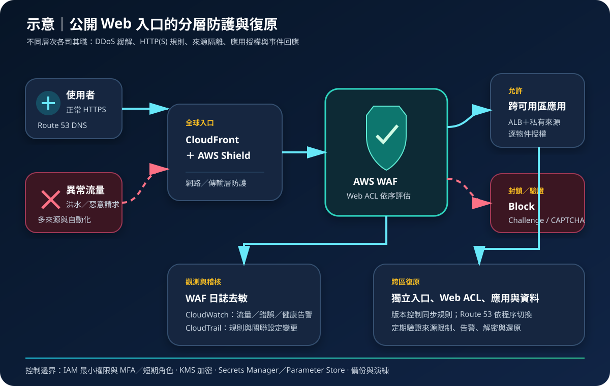

AWS WAF 與 Shield：Web 請求過濾與 DDoS 防護
AWS WAF 在支援的 Web 入口檢查 HTTP(S) 請求，AWS Shield 則提供分散式阻斷服務攻擊防護。兩者負責的攻擊層次不同，需配合 CDN、負載平衡、身分授權、應用程式安全、監控與復原設計，才能形成完整的網際網路入口防線。
作者：Dr. William｜查閱與發布：2026-09-09
服務定位
AWS WAF 是 Web 應用程式防火牆。Web ACL 可關聯 CloudFront Distribution、Application Load Balancer、Amazon API Gateway REST API、AWS AppSync GraphQL API、Amazon Cognito User Pool 等支援資源，依規則允許、封鎖、計數或對請求執行 CAPTCHA／Challenge。它著重第 7 層請求特徵，不會修補應用程式漏洞，也不是一般 VPC 網路防火牆。
AWS Shield Standard 為 AWS 客戶提供基礎 DDoS 防護，涵蓋常見網路層與傳輸層攻擊。AWS Shield Advanced 是付費方案，為符合資格的受保護資源增加偵測、緩解、可視性、事件支援與特定成本保護能力。是否適用仍取決於資源類型、架構、訂閱條款與當期文件。WAF 與 Shield 可互補，但不能取代安全程式開發、容量治理或事故應變。
核心概念
AWS WAF
- Web ACL：規則的容器，設有預設動作並與支援資源關聯；CloudFront 範圍與區域性資源的管理範圍不同。
- 規則與規則群組：依 IP、標頭、URI、查詢字串、Body、地理位置、速率及攻擊模式比對；可使用 AWS 或 Marketplace 受管規則，也可自行維護。
- 優先順序與終止動作：規則依優先順序評估；Allow、Block 等終止動作會停止後續評估，Count 適合上線前觀察。
- WCU：Web ACL capacity unit 表示規則處理複雜度，不等同流量費用；新增複雜規則前須檢查容量。
AWS Shield
- Shield Standard：預設提供基礎防護，不需要逐項開啟受保護資源清單。
- Shield Advanced：需訂閱並明確指定受保護資源；不能只完成訂閱而未盤點資源。
- 分層緩解：網路與傳輸層洪水攻擊由 Shield 能力處理，第 7 層異常請求通常仍須由 WAF 規則、速率控制與應用容量共同處理。
- 健康與回應：健康檢查、資源群組、告警、升級聯絡方式及事件演練會影響偵測與回應品質。
適合與不適合的使用情境
適合
- 公開網站、API 或登入入口需要依請求特徵阻擋常見 Web 攻擊、自動化掃描或異常速率。
- 使用 CloudFront 或其他支援資源，希望在接近入口處統一部署受管規則、IP 名單、Bot 或速率控制。
- 對公開服務有較高 DDoS 風險，需要明確盤點受保護資源、事件可視性與既定回應流程。
- 希望先用 Count 觀察規則命中，再逐步切換 Block 或 Challenge，降低直接封鎖正常流量的風險。
不適合或不能單獨完成
- WAF 不能保護未支援或未關聯的端點，也不能取代 Security Group、Network ACL、AWS Network Firewall 或私有網路隔離。
- 規則比對不能修補 SQL Injection、存取控制缺陷、業務邏輯濫用、供應鏈漏洞或外洩的身分憑證。
- Shield 不等於無限容量保證；來源架構、應用程式、資料庫與第三方依賴仍可能先達到極限。
- 只有單一固定內部來源的私有應用，通常應先使用私有連線、身分驗證與網路白名單，而非把入口公開後僅依賴 WAF。
示意故事案例：票務查詢網站的分層入口防護
以下為架構示意，不代表特定組織或正式部署。一個票務查詢網站以 Route 53 將使用者導向 CloudFront，入口先由 Shield 的基礎能力處理常見 DDoS 流量，再由 WAF Web ACL 評估 AWS 受管規則、自訂封鎖條件與每來源速率。正常請求送往受限制的 Application Load Balancer 與跨可用區應用；來源端僅接受預期入口路徑，管理介面另走聯合登入、MFA 與短期角色。
維運團隊先以 Count 驗證新規則，分析取樣請求及經去敏的 WAF 日誌，再分階段切換封鎖。CloudWatch 對封鎖率、Challenge、5xx、延遲、來源健康與容量建立告警，CloudTrail 保存 Web ACL、規則與 Shield 設定變更。機密存於 Secrets Manager 或 Parameter Store，資料以適用 KMS 金鑰加密；跨區環境預先建立獨立入口、規則、應用與資料復原程序，並定期演練 DNS 切換。

建置與運作流程
- 盤點入口與需求：列出所有網域、公開 IP、CDN、負載平衡器、API、協定、區域、流量基準、RTO/RPO 與合規需求。
- 縮小公開面：不需公開的服務放入私有子網路；限制來源僅接受 CloudFront 或預期上游，收斂 Security Group、路由及管理入口。
- 選定防護層：確認 Shield Standard 的基礎邊界；依風險、資源資格、事件支援與成本需求評估 Shield Advanced，並逐項登錄應受保護資源。
- 建立 Web ACL：依 CloudFront 或區域範圍建立 Web ACL，設定安全的預設動作、規則優先順序、WCU 預算與資源關聯。
- 由觀察轉為阻擋：受管與自訂規則先採 Count，使用代表性正常及惡意測試驗證誤判，再逐步改為 Block、Challenge 或 CAPTCHA。
- 限制濫用：依業務鍵值設計速率規則，敏感操作另加強身分驗證、逐物件授權、配額及防重放；避免只依可偽造標頭。
- 保護管理身分：WAF、Shield、CloudFront 與 DNS 管理使用 IAM 最小權限、職責分離、聯合登入、MFA 與短期憑證。
- 管理機密與加密：應用機密存入 Secrets Manager 或 Parameter Store；日誌、來源資料與備份依分類使用 KMS 加密，規則、標籤與日誌不得承載敏感值。
- 啟用觀測：將 WAF 日誌送往受保護目的地並執行欄位去敏；CloudWatch 監控允許、封鎖、錯誤、延遲與來源健康，CloudTrail 保存控制面變更。
- 演練與調校：測試誤判、規則繞過、流量尖峰、來源失效、聯絡升級與跨區切換；根據基準更新規則而非臨時無限制封鎖。
成本與可用性考量
AWS WAF 費用通常涉及 Web ACL、規則或規則群組與請求量；Bot Control、Fraud Control、CAPTCHA、Challenge、Marketplace 規則、日誌儲存及分析可能另有費用。WCU 是容量指標，不能直接替代帳單估算。AWS Shield Standard 不另收服務費，Shield Advanced 則有訂閱、承諾期間及依資源或資料傳輸而異的計費與成本保護條件；部署前須依查閱日正式定價頁與合約條款估算。
Web ACL 的範圍需與受保護資源一致。CloudFront 可提供全球邊緣入口，區域性資源則需在各區域建立與管理相應防護；設定不會因存在跨區應用而自動完整複寫。多可用區來源可提高區域內可用性，但 DDoS 防護無法彌補單點資料庫、未受控第三方 API 或不足的應用容量。
規則越複雜，越需要測試延遲、WCU、誤判與維護成本。速率規則使用聚合視窗與估算機制，不應被視為精確的逐請求配額器。跨區復原需另建入口、Web ACL、規則依賴、憑證、應用、資料、監控與 DNS 程序；備份規則檔不等於服務已能切換。
AWS WAF 與 Shield 特有資安風險與控制
- 資源未關聯：Web ACL 已建立但未關聯實際入口，或 Shield Advanced 訂閱後漏登錄資源。以資產清冊、AWS Config／Security Hub 等適用控制持續比對公開資源與防護狀態。
- 預設允許與規則缺口：規則只涵蓋已知特徵，變形編碼、未檢查欄位或新路徑可能繞過。測試文字轉換、Body 大小限制、檢查範圍與預設動作，保留應用端輸入驗證。
- 誤判造成阻斷：直接啟用受管規則或寬泛速率限制可能封鎖真實使用者。先 Count、檢視標籤與命中樣本，使用窄例外並設定到期日，避免整組停用。
- 來源可繞過：若 ALB 或 API 仍可從網際網路直接到達，攻擊者可跳過 CloudFront 與 WAF。限制來源網路與標頭驗證，定期從外部測試不應存在的直連路徑。
- 規則優先順序錯誤：前方 Allow 規則可能讓請求略過後續 Block。審查終止動作、優先順序與 Scope-down Statement，對允許及拒絕路徑建立回歸測試。
- 速率規則誤解：NAT、Proxy 與 IPv6 會影響來源聚合，分散式攻擊也可能低於單一來源門檻。結合多種聚合鍵、Bot 控制、應用配額、快取與容量保護。
- 日誌外洩：完整請求標頭、查詢字串或 Body 可能包含個資與工作階段資訊。啟用 WAF 日誌欄位去敏、最小化保留、KMS 加密、最小權限與集中式存取稽核。
- 變更權限過大：遭入侵的管理角色可停用日誌、解除關聯或加入寬鬆規則。使用 MFA、短期角色、職責分離、權限邊界、CloudTrail 及敏感變更告警。
- 只防洪水不防業務濫用：低速搶票、帳號接管與逐筆越權未必呈現典型 DDoS。加入強式登入、逐物件授權、風險驗證、交易限制與應用稽核。
- 跨區規則漂移：備援區域缺少最新 Web ACL、IP Set 或憑證，切換後形成裸露入口。以版本控制與自動化部署同步設定，定期執行實際切換與外部測試。
共同責任邊界
AWS 負責 AWS WAF 與 Shield 受管服務及其底層基礎設施的安全與運作，並依服務範圍執行規則評估與 DDoS 偵測緩解。客戶負責盤點入口、選擇並關聯資源、設定規則與優先順序、管理 Shield Advanced 保護項目、判讀事件、調整應用容量及處理誤判。
客戶仍須落實 IAM 最小權限、管理身分 MFA 與短期憑證、網路隔離與公開存取控制、適用的 KMS 加密、Secrets Manager／Parameter Store、CloudTrail／CloudWatch、備份與跨區復原。AWS 過濾流量不代表應用程式已修補、來源不可繞過、所有 DDoS 都不影響服務，或資料與業務授權已受到完整保護。
上線前可執行檢查清單
- □ 所有網域、公開 IP、CloudFront、ALB、API 與區域端點均已列冊，沒有未知或可繞過入口。
- □ Web ACL 範圍、預設動作、規則優先順序、WCU 與資源關聯已逐項驗證。
- □ 受管、自訂與速率規則已先用 Count 測試正常流量、攻擊樣本、編碼、Body 大小與例外路徑。
- □ Shield Standard／Advanced 的適用邊界已有紀錄；Advanced 訂閱下的受保護資源、健康檢查與聯絡流程完整。
- □ CloudFront 或其他上游後方的來源不能被公開直連；Security Group、路由與管理介面已收斂。
- □ 管理角色採最小權限、職責分離、MFA 與短期憑證；解除關聯、刪除與停用日誌會立即告警。
- □ 應用機密存於 Secrets Manager／Parameter Store；資料、日誌與備份依分類使用 KMS 加密。
- □ WAF 日誌已去敏並集中保存；CloudWatch 與 CloudTrail 可關聯請求、設定變更、來源健康與回應事件。
- □ 應用仍執行輸入驗證、身分驗證、逐物件授權、防重放與交易限制，不把 WAF 當成漏洞修補。
- □ 已依正常尖峰與攻擊情境估算 WAF、進階功能、Shield Advanced、日誌、CDN、來源與資料傳輸成本。
- □ 備份與跨區環境包含 Web ACL、IP Set、憑證、DNS、應用與資料，並完成真實切換、告警及還原演練。
AWS 官方一手來源
- AWS WAF Developer Guide｜What are AWS WAF, AWS Shield, and AWS Firewall Manager?（查閱：2026-09-09）
- AWS WAF web ACLs（查閱：2026-09-09）
- Managed rule group statement（查閱：2026-09-09）
- AWS Shield｜Distributed denial of service overview（查閱：2026-09-09）
- Logging AWS WAF web ACL traffic（查閱：2026-09-09）
- Security in AWS WAF（查閱：2026-09-09）
- AWS WAF pricing（查閱：2026-09-09）
- AWS Shield pricing（查閱：2026-09-09）
內容說明
本文依查閱日可用的 AWS 官方文件整理，作為基礎學習與架構討論材料；實際部署仍須依支援資源、區域功能、最新價格與配額、流量測試、訂閱條款、組織政策、法規及風險評估調整。